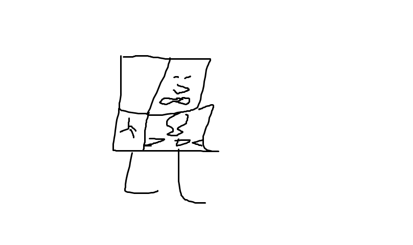
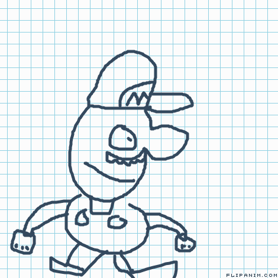

Greetings and salutations to you all. And welcome to...
The SUPER SECRET Art Gallery of EXQUISITENESS and HIGH SOCIETY
If you have made it past the cesspool of ineptitude and uncultured nonsese that was the GOBDASM, then I should reward you by granting you acess to the SUPER SECRET Art Gallery of Exquisiteness and High Society (SSAGOEAHS for short).
Here you will find only the finest collection of modern art this close to the GOBDASM. So I do hope you enjoy your stay here and enjoy the artwork to it's fullest intent. Complementary music is included.

"Bob Ross SEASON 7 EPISODE 4 16:02 Painting WIP" (2018)
What we have here is a fine piece of work which depicts a mountain side basking in the sun with a forest a creek in front. The artist seems to have taken inspiration from Bob Ross seeing at the name of the painting is an episode number and time. Unfortunately, the painting was never finished.

"Sock with a face" (2019)
Now here is a fine piece of work that really toys with the concept of reality and life itself. It isn't a statement or as it is a reflection showing us or perception of "living" by showing us a sock (which is generally seen to be a non-living thing) having a face. The face on the sock can be interpreted in a multitude of different ways. Some see the sock having a look of discomfort at it's own existence, while others see the sock mimicing the expression of the one who's viewing it. In the end, it's all up to interpretation.

"Supportive Sun" (2017)
For you art aficionados stricken with a bout of sadness, this supportive sun will be here to cure you of that ailment. The smile of the sun gives off a feeling of warmth and comfort that lets you know that you can trust this sun and that everything will be ok. The sunglasses give off a pure aura of suave coolness that ingrains into us that this is "the most radical dude in the whole galaxy" and that he'll always be there for you. No matter how cool he is, he will always make time to help you. Finally, the thumbs up is a direct reach out to us and whoever else sees this work of art. It tells us that we are doing okay and that you can get through this. The sun will always be behind you 100%. Thank you, Supportive Sun.

"O'Gamb Bams" (Recovered 2019)
This piece of work is a rather strange one. It was recovered in a crypt found underneath a library lost to the sands of time. The painting is suspected to be hundreds or maybe even thousands of years old. It depicts a flesh eating trunk like parasite that has attached itself and taken control of a host body. Whether this parasite was or even is still alive is a mystery, but we pray that it was only a part of that culture's mythology and not a representation of what this horrifying thing can do.

"Spoongle Boongle" (2019)
One of our most popular installations here is this beautiful painting about the suffering of an everyday life. The raw emotioned captured in the sponge's face as he looks down in horror at what his life has become. The sponge's simplistic design could be used as a blank slate for the average art-goer. To put themselves in the shoes of the sponge and realise what they are doing with themselves. The face could also been seen as a face of when you see someone consume an entire dozen of raw eggs shell and all.

"Box" (2017)
This one is just a box with a face. Not much else to say. It appears to have been painted on top of a school assignment. The box appears to be pretty happy or just having a good day. That's about it

"Sonic. No. Plz." (2017)
"SOnic. No. Plz." is a painting of the famous videogame character and Youtube celebrity Sonic the Hedgehog doing one of the only activities he is known for. Running. The worried look on Sonic's face and the title of the piece seem to say that Sonic is doing something (or is going to do something) that he does not want to do. This is made even more prevalent when taking into account the scandle that happened a month before the piece was completed which involved SOnic being accused of murdering Linda Baker and Brandon Sheeth. Sonic pleaded guilty to these allegations, but adamantly stated that he was forced to do it and that if he told anyone who they were then they would reveal his darkest secrets and have him killed. Anyway, this artwork is very well lined and colored. 7/10

"Goku from Dragon Ball Z" (2019)
This atristic rendering of the titular chracter from the hit Japanese anime and manga series "Goku from Dragon Ball Z". The piece features Goku from Dragon Ball Z basking in awe at what he is witnessing. What he is seeing is not shown to us, but it can only be assumed that it's a rather large laser energy ki ball that the show and manga is known for having lots of. Goku from Dragon Ball Z seems to be in his "Super Anime Power Up" mode where his hair is spiked up and also grows a nose. A truly breathtaking image that's sure to capture the hearts of many weebs worldwide.

Untitled (2017)
A peculiar painting to say the least, but it does give good insight to the life of a crackhead. You see, this painting was made during the peak of the great crackhead rise of 2017 where crackhead populations started to increase dramatically. The sloppily done lines are a representation of how crackheads feel like their skin is always crawling and moving with bugs. The face expresses an emotion only a crackhead could explain. It resembles that of a baby or a small child wanting food. Much is the same with the crackhead and wanting crack. The hand is just... well... look at it. If that's not a crackhead's hand, then I don't know what. The reason why this piece was left untitled is unknown.

"Mariin Un Finished" (2017)
"Mariin Un Finished" features the everyday plumber giving a blank expression. The lack of mouth could be a sign that he is a slave to the system and blindly follows his orders of being a plumber. Even if he could scream or cry out against the order than has been placed upon him, he would not for he would not even know that what was happening to him was being orchestrated by some unknown force. It would be frivolus to oppose the superior being when you yourself are but a mere plumber.

"Joot Koot" (2019)
Quite a marvelous piece of artwork this is showing that sometimes simplicity can convey the same amount of emotion as a complex and detailed painting like many of the others in this gallery. "Joot Koot" does not have a very deep meaning, but is here as a baseline for the next two pieces here. What is here though is to show the innocence of humankind and more specifically Joot Koot. Let us enjoy the purest form of Joot Koot while it lasts, which won't be for much longer.

"Edje" aka "Joot Koot Act 2" (2019)

"Dip" aka "Joot Koot Act 3" (2019)

"Mario Long Jump"
This painting is very boggling to the mind for the sole purpose that some people see this painting as moving. Never in my years of art collecting and connoisseuring have I ever seen a moving painting, but here it is. While, I have never seen it move myself, I am a firm beliver that it does move and I long for the day that I can see it move with my own eyes. For now, it will only move for only those select few and I envy you.